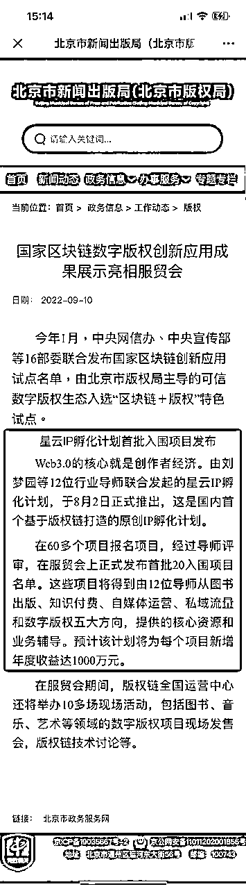
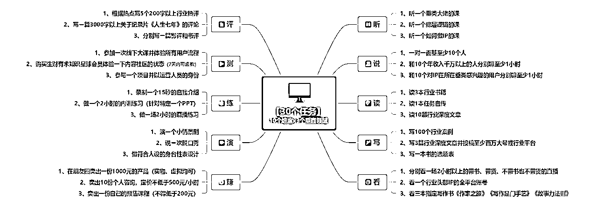
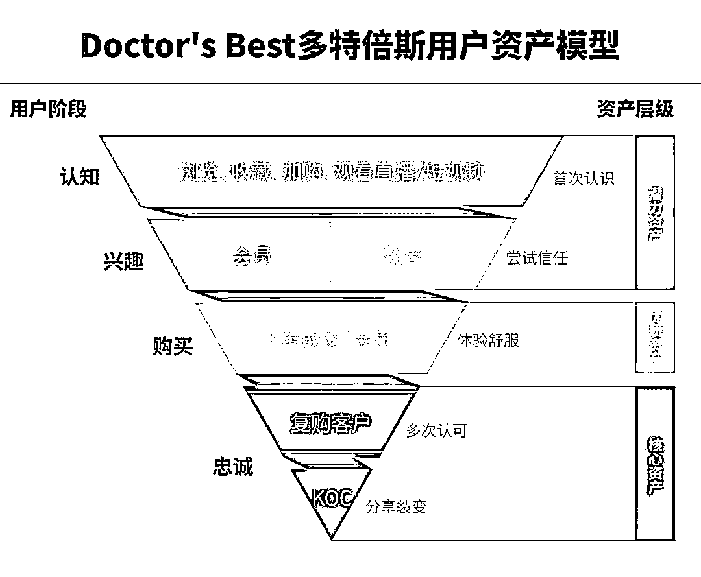
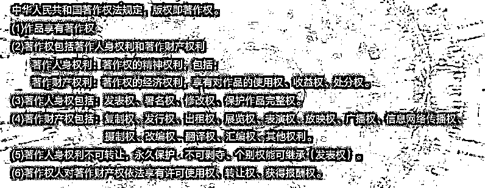
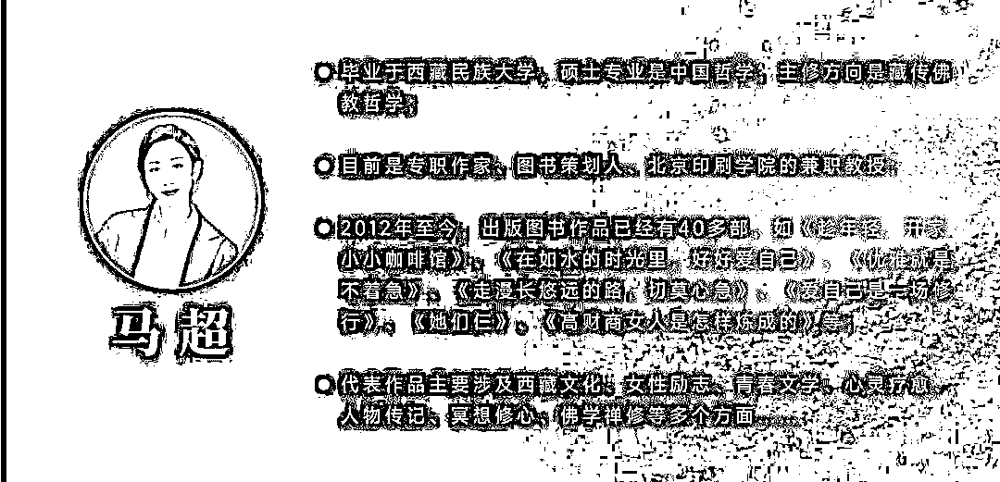
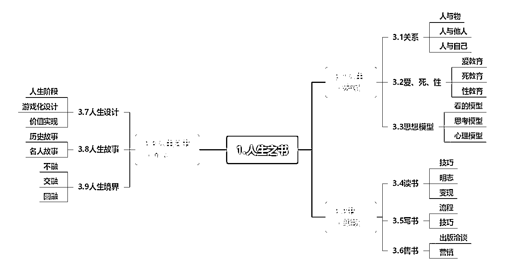
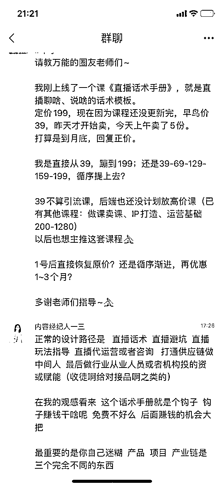
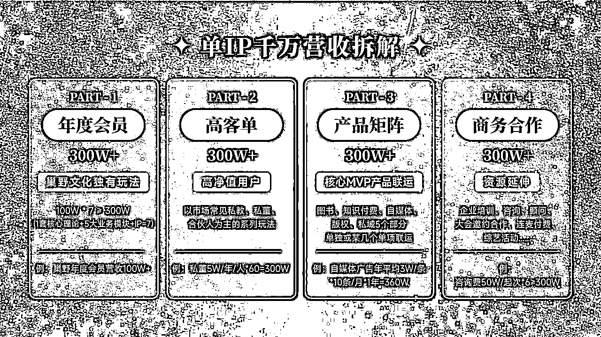
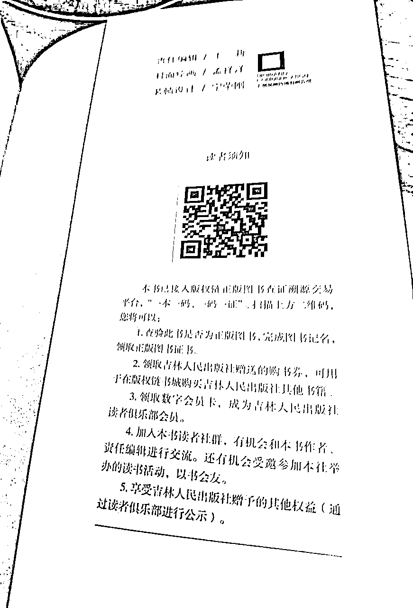
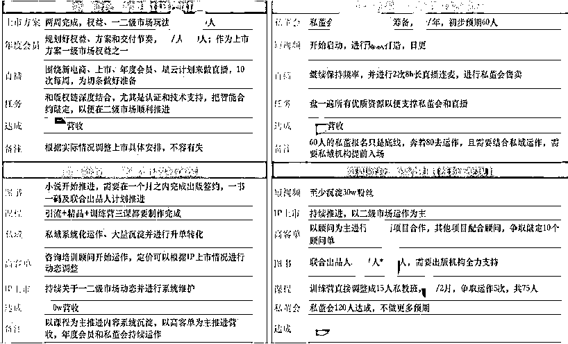

来源：https://z5uufnsl6h.feishu.cn/docx/HiVkdfBYJo2H5xxWIemcMcMQnLc
优质的合作从一个自我介绍开始，欢迎对年入千万感兴趣的IP来一起牛皮。
【姓名】刘梦园（微信：camel17）
【所在地区】北京朝阳
【一句话介绍自己】巢野文化创始人（内容经纪公司）&星云IP计划发起人（20个S级IP、年2亿的盘子、北京市版权局战略试点项目）&内容经纪赛道开创者（开启通往web3.0的钥匙，有极具想象空间的一整套理论和落地体系）
【我的标签】超强内容把控力（十年运营人，涉及多个垂类）；擅长生态布局（例：nobody的时候搭建了覆盖6亿的新媒体公益联盟）；全域IP打造（目前极少数个人把图书知识付费自媒体版权私域都做过且有结果的人）
【其他的】对应用web3.0（目前主要在IP的“上市”方向）、跨越结构洞、整合多维资源有一些心得

为了方便把整个分享的逻辑更清晰的呈现，我们来做一个前提
假设你是一个在某个垂直细分领域有多年积淀和多个亮点案例的人，但你之前从来没有做过课程知识付费自媒体等等（如果有做一部分也尽量从头体验一下，空杯状态下走一遍会发现很多好玩的事情）
那你就可以按照这5大步骤来一点点的把自己的IP运作起来，既能平衡长短期利益又能实现风骨与变现的并存，当然如果你有自己的专属内容经纪人就另当别论了~
5大步骤分别是：
夯实地基
做好内容体系规划（风骨体面）
做好千万营收模型（千万变现）
做好一年的节点规划
落地
如果没有自己的专属内容经纪人，那么第一步就需要夯实IP的地基，我会从两个视角来分析这个板块，分别是内部夯实以与市场接轨，外部夯实以便在市场上占据一席之地。
我的内容经纪理论中（整体的内容经纪理论可以参考这篇文章https://mp.weixin.qq.com/s/1BFbuc5H4igCYmJRakdpag）有一个奠基期，需要IP完成30个任务，这30个任务完成基本上就可以和市场接轨了~
很多情况下IP做着做着就遇到了一个卡点，比如直播的时候碰到有人连麦了给人解决不了问题，那是不是可以通过提前多和一些人聊或者深耕这个行业一百个案例来解决这个卡点呢；
还有就是如果打定主意要做内容型IP了，如何做优质输出就是基本功，那就需要先掌握好写作的底层逻辑，那这三本指定的写作书是一定要看的，看就要看经典，市场上的口水书就算了；
再有就是很多人做直播60分钟吭哧吭哧讲完，只有三五个人看，既没有任何变现也没有涨粉，这可能是没做任何准备也可能是没看其他人直播的问题，常规人家准备个15分钟的内容，直接循环就可以了，毕竟人均在线时长大多数到不了8min，去看人家怎么逼单，有什么话术，如何逼单才能在十分钟内从4w的成交变成6w；
还有很多例子，总体上来说还是要做好准备之后再去做IP，当然了这是一个孵化逻辑，想稳扎稳打的走就把自己当个白纸，一步步的做。这和现在市场上的筛选逻辑是不一样的，筛选逻辑下对IP的专业度、展现度、销转能力考核的尤为激烈，所以如果想走筛选逻辑的话先着重练这三个能力也OK~

12345具备了才能上山打老虎，不然只能打个小松鼠（好烂的梗），12345也就是1个母题、2层基因、3重身份、4级观感、5份资产。下面我来详细拆解一下
指的是，文化传统中具有传承性的文化因子，或者人类社会中那些循环往复且普遍发生的事情。最简单的理解就是原型。
有本书叫《经典人物原型45种》，里面都是我们平时看电影看小说看话剧时引起我们强烈共鸣的人物的原型，作者们在对自己写的人物把握不住的时候可以仔细看一下这本书，就能搞定更贴合用户需求的人物。
比如说有两个悬疑类的类型叫完美受害人和密室杀人，去搜的话应该有很多这种类型的故事，但这些故事都有一些共性，这个共性就是母题；再比如说，大家都经历过高考，当时老师们都会讲很多经典题，会一道母题，所有相关的百变题型都可以解。
对于IP来说，掌握母题就是可以既搭建出来自己的护城河又能随时调整边界的，这里可以直接挂钩很多人讲的定位卡位，但这个定位有一个弊端就是，它不是从内容的角度出发的，也就没法做好更细化的延展更不可能把护城河做出来，举例来说，讲创业是定位，讲白手起家的创业是卡位，然后呢？还是不好太运作的。
定了一个母题之后，母题下有百变题型的对不对？那百变题型最好是都可以解，百变题型具体都有哪些？题型能不能模块化，解法能不能标准化？输出能不能连续可量化？和需要这些题型的人（用户）的接口能不能简化？用户的体验能不能可视化？这些都能的话，市场上是一定有一席之地的。
2层基因
指文化沉淀价值（风骨）和商业持续能力（变现），这里重点需要说的有三点：
一是不要做没有文化溢价的事情，这要求积少成多，但也不用想的那么大。
比如女性安全这个方向，如果只是做一些遇到危险的情境如何做防卫其实很难真的有文化溢价，毕竟在这种情况下，女性基本处于绝对劣势，那真正需要分享的真正有文化溢价的是通过一些家暴、户外安全、pua、诈骗等等相关的案例分析让女性知道如何才能不让自己置于危险的情境下，用案例引出更多的案例和故事，让整个IP在整个大环境更具有沉淀和厚重感；
比如教穿搭的IP，需要沉淀更多的穿搭图片，不仅仅限于厂商的、品牌的、学员的、自己的，只有当图片的势能沉淀的足够多，IP才能更具有行业话语权，尤其是疫情当下，图片的版权足够多可以做很多事情了，比如线上发布会等等，谁说只有大厂才能做服装发布会，谁说发布会只能是新品，一场发布会包括带货、内容输出、广告、版权授权等等至少能有千万上亿的流水，但这也需要基于有文化溢价的前提下；
二是IP是少数人的领地，每个IP的花期和成长环境不同，不要走别人的路径，既容易形成路径依赖又容易忽略“地图”上不好展示的关键节点；
1931年美籍波兰裔哲学家科日步斯基发现人类在识别模式上有极大的天赋。我们天生具有接受大量数据并将其转化成简易模型的能力，但是有时候我们会忘记那个模型只是现实的表现，而非现实本身。所以基本上任何试图通过他人的成果捕捉现实的尝试，都会使你漏掉很多情境资讯。
比如现在很多家都在学博商的玩法，但忽略了其实博商的后端已经积累了十几年，199的小课只是后端几万上百万费用的钩子；赛马机制可以学，但是后端没有常年的积淀是学不来的，所以不要全学~
最有效的办法是找十个模型，看自己适合哪个模型的哪一部分，再看这些部分能不能有机结合，运作起来是不是顺滑，借鉴但非借用~
三是不要相信天道酬勤那种鬼话，极大概率是幸存者偏差，这里用不下牌桌的能力来表达会更恰当。
看过太多说要常年公众号日更的了，但是不会运营没流量，不做产品预设没变现，不学写作没技巧，不做输入没品质等等。
像这种是不是可以转换个思路呢？把稍微有数据正反馈的内容做一下基本调整，放到另外一个平台，学会把变现放在第一位，如果两周不能变现就赶紧撤赶紧换，这里的变现不是说多多，起码一个300的咨询是可以卖出去的吧？如果再不行就花钱找个团队或者用未来预期换个合伙人吧。
所有的努力与坚持必须是在有非常明晰的前景下才有效，也不要高估了人性，很少有人能在没有持续变现的正反馈下坚持太久。
指IP需要根据不同的状态下把自己当工具或者当人或者当神。
工具是从解决用户问题的功能性上去说的，举例来说，我就是来看你分享的如何做知识付费课程的，所以你不要表演其他的东西，我不想看，也不要说你多牛逼，你先帮我把做一节课的问题解决了再说；
人是从解决用户价值主张或情绪性的角度去说的。乔治·戴德说过，在人际交往中，你接触的不是人而是他们的防御机制。
所以IP想与用户的亲近度up,首先就要用情绪打破他们的防御，像个身边的朋友一样和他们沟通，你是个超级富二代但是你在整容上吃了大亏，你是个超级能吐槽的人但是你数学不行，你家庭幸福但是你从小吃了很多苦等等；
神是从解决用户迭代升级的角度去说的。危机具有强烈的再分配的效应。
当用户意识到自身的瓶颈之后便具有了一定的危机感，这时候谁解决这个危机感谁就具有一定的再分配话语权，而往往分配的话语权的丧失也意味着用户已经从平等的状态变成了被指挥被组织的状态，且这种状态会维持较长的一段时间，如果IP能够借助这个状态搭建完自己的组织，那这个护城河就彻底搭建起来了
指的是IP的对外输出和呈现上要具备至少两个观感才可以让用户有被感性支配而非理性催生的消费行为。
韩国电影《魔女》中有一句台词是你的S级和我的是不一样的，我是S级是因为最高只有S级。松弛感是说IP有一种尽在掌握的状态，龙飞律师在婚姻方向的连麦上就是有一种松弛感的，给用户的感受就是你的问题我差不多都见过了，你看那些连过麦的都解决了，你还不快来说出你的糟心事儿我给你出出好主意嘛，这也是她的账号短短时间内就破千万的原因；
对象感是指这些话我只对你一个人说，尽可能让用户喜欢你营造出来的这段关系中的自己；直男并不直男癌这个账号基本上就是通过读粉丝私信来做系列涨粉的，每读一份私信都让用户觉得这是在说自己或者自己身边的胖友，通过破口婆心的话语让用户觉得自己应该按照他说的做才是好的自己；
获得感指的是没能让你说卧槽就是我输，南翔不爱吃饭的粉丝说过最多的一句话就是你赚钱我绝对不眼红，能够用一年时间做一道宫廷菜的人是完全对得起用户的期待的也是完全配的上用户的一句卧槽来赞美的，这里本质上还是将自身的专业发挥到极致，成为业内天花板级的存在；
氛围感是指沉浸其中无法自拔。谁能忍住不在李佳琦的直播间剁一次手呢（好吧，我还没有），来感受一下除了直播间氛围“OMG，所有女生们，今天的福利来咯~”外李佳琦的剁手文案给的氛围
口红
这支唇膏在嘴巴上会跳舞
这只口红给人的感觉是，甄嬛上位以后回头一笑，对着那些人说“老娘赢了”
啊！好闪！五克拉的嘴巴
香水
你不惹我我不惹你，你敢惹我，老娘把你卡嚓卡嚓的那种味道
恋爱中的少女，开心的去找男朋友，那种很甜的感觉
屋顶花园，斩男香，非常适合夏天
指的用户资产、版权资产、实物资产、文化资产、生态资产这五种和个人IP息息相关的资产形态。
用户资产指的是你的用户是谁决定了你是谁。
如果你的IP是靠流量堆起来的，那这些庞大的数量和数据就是你的用户资产，如果你的IP是靠品牌涨起来的，那品牌本身所具有的势能就是你的用户资产。
显而易见，品牌性质的边界会更广，幂次效应更强，IP的多次“觉醒”就有了可能。必须要说明的是，用户资产的评估模型有很多种，标签、动作、分层、数量、平台等等都会影响评估模型，这里有一个用户资产模型（并非评估模型）可以给大家借鉴一下

版权资产首先要明确一个IP可以有17种版权，其中13种是可交易的。
在web3还没普世之前，这个部分做大量的准备和规划是非常有必要的。
首先就是需要有更多的版权内容，包括但不限于做图书知识付费课程自媒体私域版权（这里指的是电子书版权、纸质书版权、有声书版权、课程版权、影视剧版权、视频版权等市场常规说法）；
然后才是通过版权证券化方式做另外一种变现，版权内容和版权证券化都是版权资产。

实物资产是指IP衍生品，这一部分在影视剧领域最为常见。
超过数亿以上收益价值的周边系列像悟空大声、机器猫、迪士尼系列、漫威宇宙系列等等，形式多种多样，可以是盲盒、毛绒玩具、服饰、美妆、文具、饮食甚至主题公园等等，同时目前大行其道的还有数字藏品，这属于另外一种实物资产的变种~
文化资产是指IP能够将自己置于某一主文化或者亚文化之下（需要合法合规合趋势），并借势让自己能够获得经济和文化效益。
比如我家星云计划里的一个IP马上就要做自己的版权证券化，有我司整体战略规划和布局，有北京市版权局版权认证支持，有版权链和智能合约的技术支持，有多家机构和资源方的合作，推进之后他就是全国乃至世界IP“上市”第一人，我司也算是创造了一个奇迹，这也算是文化资产的一种；
比如北大荒集团的一个农场要做文化资产方向的规划，北大荒变北大仓，是解决了新中国早期粮食的问题的，所以把“满仓”这种美好寓意作为文化资产的符号，用文化给品牌赋能，李子柒的IP本质上也是走文化资产路线的。
生态资产本质上指的是某个组织里所有成员或者单位协同有效发展带来的经济效益。
肖逸群为什么会做一个福布斯新创企业家联盟和U30同学会，我为什么做一个星云IP计划（后面还有IP上市计划）、生财为什么做航海？其实是从组织一个利益共同体来创造一个终级护城河，这样一来，整合上下游供应链、沉淀多维资源、卡多种生态位、赋能多种项目、极致缩小信息差等目的就都可以达到了~
一个IP的内容体系包含5个部分，四级内容架构、一套独有理论、一个十年故事、一份百问百答和一份产品项目产业链打通路径。
它是第一位的，为什么要做这个呢，首先这是风骨的底线边界，然后是可以给内容提真降噪，最后是给产品矩阵（也就是各种版权载体）做养分池。那这4级分别是什么呢？用我家一个IP举例

第一级是IP方向，印刷学院的教授以及出了40多本书，教别人出书肯定没问题；哲学硕士以及修心类、疗愈类的其实都可以往人生这个深度命题上引导；传记类励志类又可以换成另外一个词就是人生故事；OK了，她的IP方向确定了就，人生之书；
第二级是围绕着IP方向思维发散出二三十个关键词后，选出三个覆盖度足够广的，最终她的3个二级，就是人生、书、人生之书；这里需要说明的是第二级其实是最难确定的，每个IP的生成逻辑都不一样；
第三级是每个关键词下面的关键业务板块，这个部分是可以直接随便拿出一个点了做书做课的；
第四级是关键业务板块下面对应的关键业务内容，尽量遵循mece原则，即相互独立完全穷尽。下面给出她的4级架构作为参考：

独有理论的前提是能够在某一个方向上有很深的思考和总结，比较讨巧的方式是从多个模型、工具和测评中延展出来，然后再把能力分解成动作，再用用户的故事讲出自己的观点，基本上一套理论就成型了。（这一趴有点啰嗦了，但又怕说不清楚，手动哭笑不得）
系统的方法也是有的，大概分成5种。
第一种理想解法。
TRIZ的一个基本观点是：任何系统都向其理想解方向进化，理想状态不断增加。理想解即消除了所有有害作用，充分发挥有益作用的解决方案。理想解实际是不存在的，当技术系统越接近理想解，其成本越低、效率越高，系统的现有资源利用率越高。
ARIZ算法中给出了确定理想解的步骤：
1）设计的最终目标是什么？
2）理想解是什么？
3）达到理想解的障碍是什么？
4）出现这种障碍的结果是什么？
5）不出现这种障碍的条件是什么？
6）创造这些条件存在的可用资源是什么？
所以如果IP想做出来自己的一套理论，可以思考在某一个问题的解决上理想解怎么做，基本上按照这个步骤都可以做出来。（具体案例可以参考《TRIZ:产品创新设计》一书中9.5理想解部分，微信读书可看）
第二种是节点法。
列出你在实际生活工作中给甲方解决一个实际问题需要分几步，每一步可以提炼的共性点又是什么，这些点是否可以通过引入一个其他的物体或者场来串联起来。
举例来说，有个做私域很牛逼的胖友，好几个出版社要找他出书，但他自己想精益求精，我们就讨论了一下他的理论问题，通过理论的确定倒逼内容重新梳理。
因为他的私域年度顾问费用较高（50-100w/年），服务逻辑下，我问的是他怎么给甲方提供服务才能让甲方觉得钱花的不冤，他就说了一下第一步是重构组织结构重塑商业模型，2345步分别是什么，比如私域做的好的企业的模型大概有多少种呢？哪种是这个甲方可以借鉴并吸收的呢？怎么样搭建自己家的包含私域在内的数字化商业模型呢？这个模型有哪些关键节点呢？这些都做好了对企业营收有什么影响呢？
交付逻辑下肯定第一时间要考虑的是私域在甲方里是一个什么地位，在甲方里推进会不会遇到各方的阻碍等等，那就需要把私域放在一个非常友善的位置，用水利万物而不争来说明就非常贴切了，后面的几步也就逐步把水相关的关键词进行对应，比如水系、水利工程、水系、水循环、流水等等。
（特别说明，目前这个水利私域理论属于我的那个朋友，在此仅作为举例使用，不建议朋友们挪用~，如果想私域合作的话我可以对接）
第三种是词根法。
结合IP所在垂直细分领域来做，我司一个文案类IP，她的核心优势是懂商业，那么是和钞票挂钩的，想学文案的人大多数是想获得单位时间内更多钞票的能力的，所以初步的理论可以叫做文案钞能力。
但是吧，一个理论只有钞票这个点是很low的，那还要重点强调这个钞怎么办呢？把所有chao都列出来，看看能不能找个3-5个，我们找出来这三个抄（仿写和拆解）超（文字杠杆）炒（情绪），文案4chao理论get。
但在实际运用中是要把课题分离的，这个理论是我们和出版社谈妥出版的核心点，但不是我们做课程的核心点，课程有另外的分类方法，比如题目是文案人如何让甲方付你4w一条的软文费，那就需要从这4个chao里分别拿出对应的内容来告诉学员怎么用才能解决这个问题。
第四种是母题法。
可以是单独一个母题的延展和截取，也可以是多个母题的有机结合。
“截拳道是一门脱离任何功夫门派窠臼的技击思想，这种思想最宝贵的核心便是反传统的自由。李小龙提出“以无法为有法，以无限为有限”的开拓性拳理，致力于追求武术搏击的根本，追求核心理念为：精简、直接、非传统的三要素技击法，在后期形成了有固定形态和技法的格斗术，由李小龙本人原著的《李小龙技击法》一书成为公认的中期截拳道教材。”
这就是把道德经无为而治的母题和武术的母题做出了结合。
第五种是核心法。
我的内容经纪理论是一整套东西，没办法用以上四种办法解决，那怎么办呢？我找到我这些理论内容的核心点，就是内容经纪人，直接命名内容经纪理论了；还有我最喜欢的《中间人经济》这本书，整本书在说的其实就是6个中间人角色，所以这本书没有理论，但又可以成为中间人理论~
顾名思义，百问百答最好是有上百个（概数）问题和回答，问题从哪来呢？从行业爆款选题来，从高赞来，从热评来，从变现出发，从用户需求出发。答案怎么写这个没有定式，但有几个需要注意的点，具体如下：
强调用户获得感——认知提升（不急）、学以致用（常规）、即时获利（急）；
预留钩子——引流私域（回复666可以获得xx手册）、植入产品（这里简单回答一下框架，更具体的内容可以联系助理咨询或预购系统课程）、长尾传播（做好水印和二维码，目前最好的模式是飞书关掉对应复制权限）；
降本增效——减少无意义的重复劳动（我的故事可以看一下第XX条内容）、大量精准流量引入（每周三个免费咨询名额，随机朋友圈点赞选择）、高价转化（我有XX可以帮你系统提升和获得结果）；
系统问答——问题主要涉及常识（wooow厉害了）、误区（我不行的话我得找行的人学习啊）、IP方向专区（高客单和商务合作）三大方向；问题需要考虑用户关注度高的；答案需要带有IP本身调性并体现专业性~
给一个参考案例——魔筷家的视频号百问百答
目前大部分想做IP的人一开始就把自己的十年故事做成短视频置顶了，这也没问题，但是有一些需要注意的点我总结了一下：
素材方面，需要前后对比表现成长，重点是新手村到大佬村的对比；关键时刻重点标注 低谷、荣耀、转折；
故事方面，一般一个十年故事要5-8分钟，这种中视频长度需要有一个非常重要的信息作为主线，用主线支撑可视度用支线贡献立体度；
文案方面，表达清晰，便于用户接收想要传递的信息；目的明确，增加信任，毕竟信任是IP的货币；契机合理，为什么要发布这个十年故事；
音乐方面，不要搞那种沉重的，体现个人品味即可。
如何打通点线面路径呢？在垂直IP小航海了有个典型的例子，因为没有思考好后面的路径所以在前面的产品细节上打转了就。（好吧对话上我有些凶）

设计点线面打通的重要性就体现出来了，在电商方向上，大家都知道人货场这个概念，到了内容型IP上其实就是品项态（产品项目生态），这里也不适合用我司签约IP和星云计划里的IP做示例了，那就聊点实在的，用我自己举例吧，虽然我不做我自己的IP。
怎么做产品呢？
产品可以是一篇文章一份课程一个账号一个3折页甚至一个二维码等
假设我的第一篇龙珠是一个本身就奔着龙珠去的产品，那这个产品给我带来了一些对做全域IP感兴趣和对做内容经纪人感兴趣的朋友，其中也包括不拿薪资愿意跟着干的忠实粉丝以及是头部MCN操盘手的徒弟们等~
那我怎么做项目呢？
是不是可以再做一个内容经纪人培训项目养一大批和我差不多的人呢？可以的，那就把这个项目交给愿意参与的小伙伴一起做好了，分钱嘛对不对，而且还要舍得分钱；
那怎么做产业链呢？
我有一大批经过层层筛选的内容经纪人、还有一大批经过层层筛选的S级IP（80个报名星云计划的但没入选的那些至少也是A级以上的），还有我多年积累下的各种头腰部资源，组成一个S级为基因的产业群组是不是也可以呢？可以的，理论端、执行端、变现端、IP端、政府支持、人才端都OK了之后我做什么不行呢？
再比如数字资产的运作，这就是我司和北京市版权局的战略合作的范畴内的东西了，可以做的产品是一个版权证券化的基础课程，项目是一个针对于数字认证的代认证项目，产业链是做一个商学院或私董会，和商学院的强资源人物们一起做项目和盘子，后续的很多东西都玩得6

图里主要涉及到内容型IP可以变现的几乎所有方式，以及一年之内可能会变现的大概数额，以及这些数额的公式模型等
年度会员的年入百万像素级拆解可参考https://mp.weixin.qq.com/s/NsyeFNXoxFDSM9gbWsUTVg，核心点在于提供标品趋近0交付。
私教常规是3w3个月的一对一或者10-15人小班，当然不同垂直细分不同IP底蕴费用不定时间不定，3个月的时间可以分为第一个月进行主题性课程输出，一周两次一个月8节课就差不多了；第二个月有针对性的留作业，第三个月给每个人出具一个系统性发展报告即可。
私董会分为线下和线上两种，线下的是舶来品，是由CEO定期圆桌讨论演变而来，是继EMBA、富豪俱乐部之后的第三种企业经营者沟通交流平台线上的是群响、恒星、生财、海参等互联网社群私董会，核心就是花个5-20w买个圈子的门票
合伙人和徒弟的玩法很像，核心就是买一赠一送一赚一分一，20w起100w属于常规线
图书在常规出版的情况下卖5w册才有二三十万的版税收入，但是能卖1w册已经属于畅销书了，这意味着卖1w册已经挺难的了，那这四五万能不能拿到就是个概率问题，那是不是有一些额外的玩法可以在图书方向赚到钱呢？
可以，走一书一码和联合出品人计划，在一书一码技术的支持下招募1000个人作为联合出品人，这个玩法和联盟促销的核心不同点在联合出品人出的费用要高于图书的价格，当然，责权利肯定也是不一样的。

课程和直播一起搭配会更有效果，说个现实数据，199小课，一天两播，一场6w，一个月400w~有点意思是吧，如果想走这个路线，可以直接低成本做直播课然后剪成小课，再配合直播在短视频内容部分做切条，1+1+1是绝对＞3的。
注意一个底层逻辑就是4近，离钱近好变现，离痛点近好卖出，离易用近好留存，离信任近好复购（这个复购就可以结合私域做升单了）。
自媒体账号的话，这里不提相关技术手段哈，比如投流啊数据复盘啊等等，起号必须要走爆款路线，爆款从哪来？把这个行业和其他三个不相关行业的近三年的爆款选题都拉出来，你的爆款库就有了；
内容主要从五个方向来配比，专门拍摄的系统专业内容、演讲培训课程直播切条、采访对谈、背景介绍、时事热点辣评，具体哪个方向占比较大看IP本身表现力和市场需求度，不看内容好不好（当然，有风骨的人不缺好内容）；
内容型IP的短视频账号是为直播和私域转化服务的，不要纠结是否能挣多少广告费和是否被一些人抄了，意义不大。
咨询的话既然做IP了就要在1k+/h，敢要价也是对自己的服务有信心的表现，如果300的话不如让咨询人去学课程，每个产品都有对应的使命，咨询是为了解决问题的嘛？不是的，是给调整方向的，但这个方向的调整是要调用之前多年的沉淀的。
培训的话，可以一天多少钱比如1天3万不能超过6个小时；一个小时多少钱比如1小时1w，2小时起；也可以3天2页打包10w；也可以签年框（不过我接触的这种比较少不推荐）。
顾问可以分为轻顾问和重顾问，轻顾问只有方案和资源对接，重顾问包括方案+一定次数陪跑+资源对接+人员培训；建议前者3w起，后者20w/年起。（顺嘴说一句，我的是咨询5k、轻顾问10w，重顾问100w，不免费提供建议）
所以其实到目前为止知道设计一条点线面打通的路径也知道每个路径的节点上大概能收多少钱，IP接下来就可以做一个一年营收千万起的规划了。
做这个规划需要综合考虑三条线，变现、内容、产品。
变现主要是结合千万营收模型那里，每个产品都有自己的单位时间roi，比如行业影响力小但是专业度非常可的话，不建议做私董会而要做私教；专业度比较差但是资源整合能力很强，建议优先做年度会员；是从底层一点点打拼出来的，建议多做咨询顾问；等等
内容主要是要在内容体系规划部分精益求精，如果暂时没办法找到自己的内容体系，可以退而求其次，先把库搭建好，能力不好的话苦功夫还是要下的，比如爆款库、十万加库、标题库、视频模型库、理论库、案例库等等；
产品主要是要先做，如果是一人模式可以先从一个直播课做起，如果是团队模式建议做好一个矩阵，如果是钞能力模式，也不建议找代运营机构，直接找经纪人，比如我（不是抖机灵）。
考虑完三条线之后建议把所有能变现的产品都列一遍，然后假设自己一切条件都OK，再看这些产品的优先级排序，排序原则以能够选对“生产资料”为唯一核心，这里的生产资料指的是能够有滚雪球效应的内容，用故事推进故事，用图片吸引图片，用如何拍视频堆积视频体量等等
这个图价值2000w啊哈哈哈，整个图要配合着每个部分的细案来看的，这是在每个部分的方案做完了之后才能做得东西。我花了3天时间才做出来，主要是每一个阶段都牵扯着其他三个阶段、每个营收点都必须在百万以上不然都不值得写在上面、每条文案都牵扯了至少三个团队等等，真是让人脱发。

如果朋友们需要借助这个图做自己的IP一年规划的话，还是需要把关键词部分进行调整（就是IP上市啊高客单啊私域那些东西），毕竟IP之所以为IP，规划还是要配合着本人特色的。
这是我司签约的IP里比较典型的一个IP，从图书知识付费自媒体版权私域再到数字资产都有了，如果觉得自身的阶段和能力还没到一年时间能全都做了的地步，可以选择两三个方向一起规划，千万不要只规划一个，这样脆弱性高，有很大赌的成分，当然了，如果自身资源足够的话也不是不可以。
综上，一步步走下来可能会有一个开天眼的感觉，这样挺好的，希望大家都能清清醒醒的做IP，前路光明的做IP~（落地这一趴就不聊了，涉及到太多人员和成本的问题，具体情况具体分析吧大家）